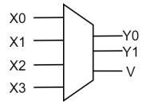
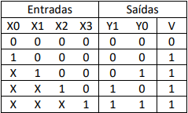
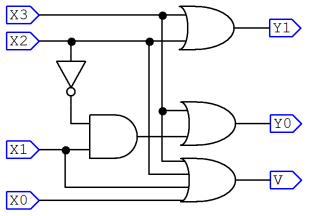
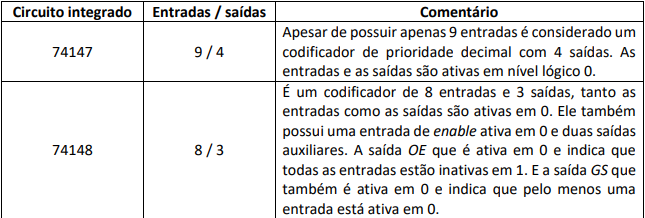
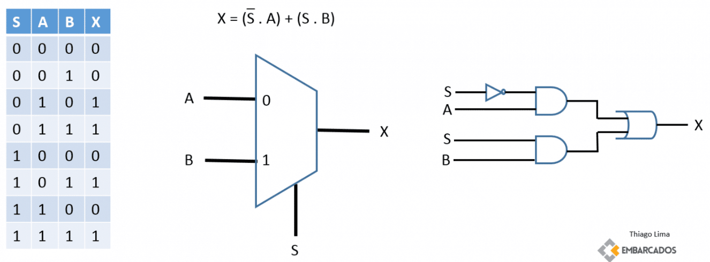
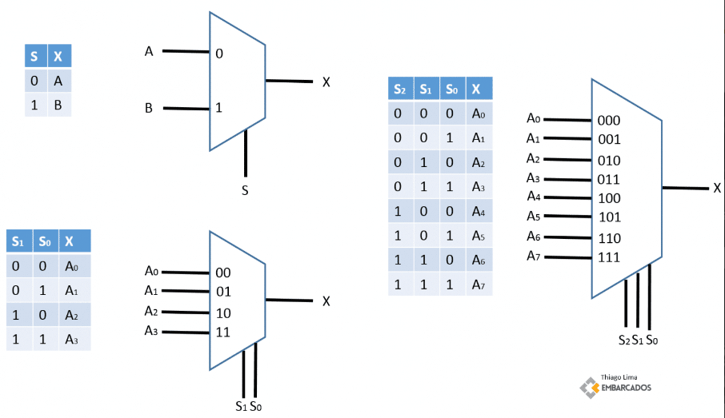
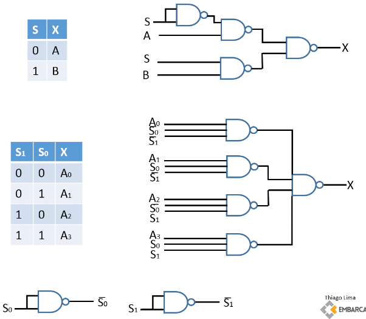

◉ Codificadores de prioridade
Os codificadores de prioridade funcionam de forma semelhante aos codificadores normais,
porém neste tipo de componente as entradas de maior número têm prioridade sobre as entradas
de menor número. Assim, se mais de uma entrada for acionada ao mesmo tempo, a entrada de
maior prioridade será codificada na saída.
Neste tipo de codificador é comum também encontrarmos mais uma saída, que serve para
indicar se o resultado do codificador é válido ou não. A Figura apresenta um exemplo de
codificador de prioridade de 4 entradas e 2 saídas, com mais uma saída de resultado válido.

A tabela verdade apresentada na Tabela permite verificar o comportamento deste
componente.

Observado a Tabela podemos notar que a saída de resultado válido V assume 0 se
nenhuma entrada está ativa, e assume 1 se alguma entrada estiver ativa. Pode-se também observar
que se uma entrada de maior prioridade está ativa, as entradas de menor prioridade são ignoradas.
Este tipo de codificador é mais utilizado pois permite um maior controle sobre o
comportamento das entradas, informando inclusive quando as saídas estão válidas ou não.
A Figura apresenta o circuito construído com portas lógicas para um codificador de
prioridade de 4 entradas e 2 saídas.

Existem diversos tipos e tamanhos de codificadores de prioridade, a Tabela apresenta
dois dos mais comumente utilizados.

◉ MUX – Multiplexador
Um MUX ou Multiplexador (Multiplexer em inglês), é um dispositivo eletrônico que é utilizado
para selecionar um sinal de entrada, para que este esteja presente na saída. É importante notar
que o sinal aplicado à entrada pode ser analógico ou digital. Normalmente um MUX pode ter até 2N
entradas e necessita para a seleção do sinal de saída, que N sinais de seleção estejam presentes.
Portanto, para dois sinais, é necessário um sinal de seleção, para quatro sinais, é necessário
dois sinais para seleção, e assim por diante. Eles são dispositivos de hardware importantes e
são facilmente implementados em linguagem HDL.
➤ Circuito de um MUX de 2 bits de entrada
Veja na figura a seguir um circuito para duas entradas, A e B, selecionadas por um sinal S.
Perceba que, se S igual a zero, X é igual a A. Para S igual a um, X é igual a B. O sinal S então
funciona como um selecionador. Digitalmente é possível selecionar a entrada apropriada para o momento.

➤ Circuito de um MUX de n bits de entrada
Representei na figura abaixo três MUX diferentes, para duas, quatro e oito entradas.

➤ Circuito de um MUX com portas NAND
